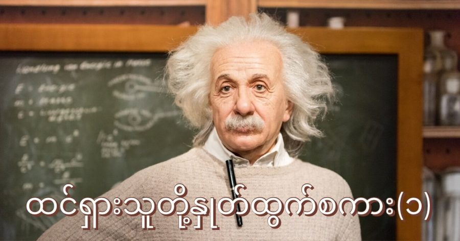

လူတစ်ယောက်ဟာ တခါမှအမှားမလုပ်ဖူးဘူးဆိုရင် အဲ့သည့်လူဟာ အသစ်အဆန်းဆို တခုမှ မကြိုးစားခဲ့ ဘူးလို့ပဲဖြစ်မယ်
အဲလ်ဘတ် အိုင်းစတိုင်း
Anyone who has never made a mistake has never tried anything new.
Albert Einstein


လူတစ်ယောက်ဟာ တခါမှအမှားမလုပ်ဖူးဘူးဆိုရင် အဲ့သည့်လူဟာ အသစ်အဆန်းဆို တခုမှ မကြိုးစားခဲ့ ဘူးလို့ပဲဖြစ်မယ်
အဲလ်ဘတ် အိုင်းစတိုင်း
Anyone who has never made a mistake has never tried anything new.
Albert Einstein
July 16, 2021